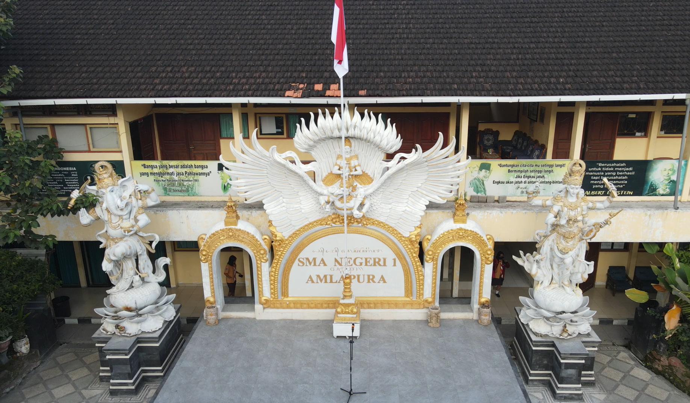
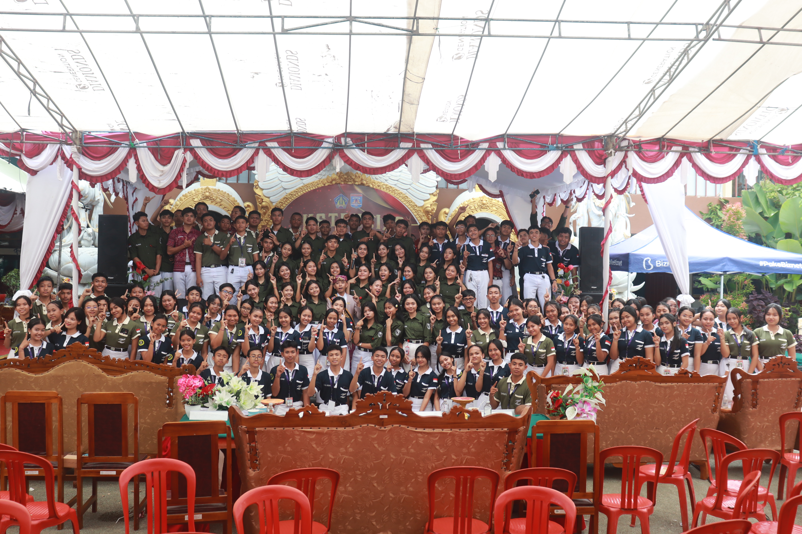

ZELFONIK SMANSAPURA
Selamat datang di website resmi Zelfonik Smansapura!

Selamat datang di website resmi Zelfonik Smansapura!
Zelfonik Smansapura hadir sebagai wadah aspirasi siswa yang mengutamakan integritas. Kami percaya bahwa kepemimpinan bukan tentang memerintah, tapi tentang melayani dan menginspirasi.
Baca Selengkapnya
Dokumentasi kegiatan OSIS & MPK masa bakti 2025/2026

Kegiatan pelatihan kepemimpinan untuk calon pengurus baru...
Lihat Detail
Pertandingan persahabatan antar kelas pasca ujian semester...
Lihat Detail